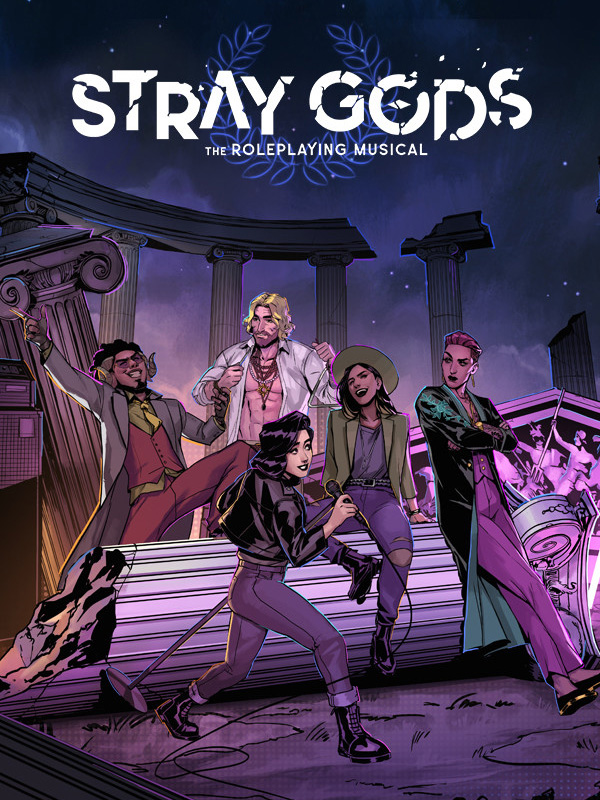

Stray Gods: The Roleplaying Musical
Details
|  | |
| Playtime | Not Played |
| Last Activity | Never |
| Added | 17/09/2024 0:12:49 |
| Modified | 17/05/2025 23:39:41 |
| Completion Status | Not Played |
| Library | Gog |
| Source | GOG |
| Platform | PC (Windows) |
| Release Date | 10/08/2023 |
| Community Score | 80 |
| Critic Score | 85 |
| User Score | |
| Genre | Adventure Music Role-playing (RPG) |
| Developer | Summerfall Studios |
| Publisher | Humble Games |
| Feature | Single Player |
| Links | Steam Twitch Official GOG |
| Tag | Adventure Atmospheric Cartoony Choices Matter Choose Your Own Adventure Fantasy Female Protagonist Funny LGBTQ+ Multiple Endings Mythology Role-playing Romance Story Rich Visual Novel |
Description

In a modern fantasy world, college dropout Grace is granted the power of a Muse - power she’ll need to find out the truth behind her predecessor’s death before time runs out. You’ll decide who Grace allies with, who she can trust, and who may betray her in this beautifully hand-illustrated roleplaying musical.
Written by David Gaider comes Stray Gods - an urban fantasy tale of finding your place, taking charge of your fate, and discovering answers. Your choices will change the endings, as well as the path you take to get there.
A compelling story of hope, self-discovery, and forging your path.

Adventure, love, and songs await!
Charm, negotiate, or strong-arm your way through their world as Grace, playing through original, fully interactive musical numbers composed by Grammy-nominated composer Austin Wintory, Tripod (musicians Scott Edgar, Steven Gates, and Simon Hall) and Eurovision Australia’s own Montaigne (Jess Cerro). Fully orchestrated and performed by an all-star cast, you’ll feel as though you’re right there on the stage. With thousands of potential variations based on your choices, you’ll craft the soundtrack to your own one of a kind musical experience.

Choice and consequence built from the DNA of RPGs - no two playthroughs are the same.
Delve into a hidden world of mythic Greek gods and monsters as you get to know a cast of hilarious, enigmatic, and compelling characters. Forget what you know about these mythological beings - in Stray Gods you’ll forge friendships and find foes with many familiar names, but not so familiar stories. Play as star and stagehand as you determine the story you want to tell through conversation and song.

Find friendship, love, or yourself.
Build friendships with mortals and Gods alike. Stoke the fires of romance if you so choose - explore, pursue, and confess your love with four potential paramours. Decide who you want to be through every choice. David Gaider’s storytelling and characters come to life with performances by an all-star cast, with the likes of Laura Bailey, Mary Elizabeth McGlynn and more cast members across video games, television, and Broadway.

A musical for video game lovers, and a video game for musical lovers.
With all the comedy and tragedy of your favorite stage shows, Stray Gods is a tongue-in-cheek and heartfelt reconception of Greek mythology combining what we love about contemporary musical theater with video games where character and story take center stage. Collaborating with some of the best in music, broadway, television, and games - Stray Gods is a debut not to be missed.